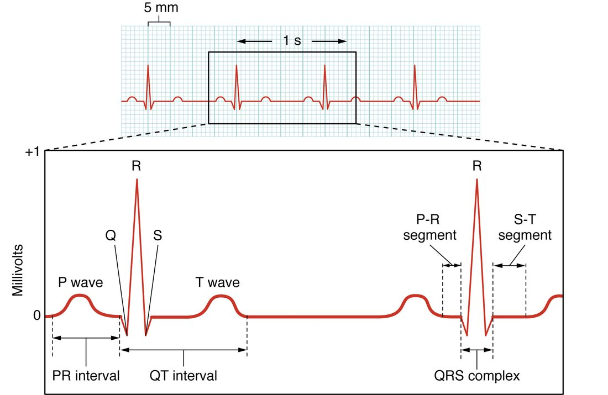

Learning how to read an ECG starts with three waves and a handful of intervals. The electrocardiogram is a graph of your heart's electrical activity recorded from your skin, and every bump and flat stretch on it matches a step in the conduction path you just learned. This page explains what the ECG actually measures, what each wave and interval shows, how to read a heart rate off the paper, and how common rhythm problems look.
What an ECG records
A nurse sticks ten small electrodes on your chest, wrists and ankles and connects them to a machine. Within seconds it prints a wavy line. Nothing goes into your body. The machine only listens.
What it hears is the heart's electrical activity. Each time a wave of depolarization sweeps through the heart, millions of cells are at different voltages at the same moment. Current flows between the depolarized and the resting regions. Your body fluids conduct electricity, so a tiny share of that current reaches your skin, where electrodes pick up voltage differences of about one millivolt.
The electrocardiogram, or ECG (electro- = electric, cardio- = heart, -gram = record), is the graph of those voltage differences over time. You will also see EKG, from the German spelling Elektrokardiogramm; it means the same thing. This course writes ECG.
Keep two points in mind from the start.
- An ECG is the sum of the activity of many cells, seen from outside. It is not the action potential of any one cell. A single cell's action potential lasts about 0.3 second and swings about 100 mV; the ECG shows only when large regions are depolarizing or repolarizing.
- An ECG records electrical events, not muscle contraction and not blood flow. Contraction normally follows each electrical event within a few hundredths of a second, but the ECG cannot tell you that it happened.
Leads: views of the same heart
A voltage is always measured between two points. An ECG lead is one such measurement: the voltage between a positive electrode and a reference point, recorded over time. Each lead views the heart's electrical activity from one direction, the way several cameras around a stadium film the same play from different angles.
One rule tells you what each lead will show.
- A wave of depolarization moving toward a lead's positive electrode draws an upward deflection.
- A wave of depolarization moving away from it draws a downward deflection.
- A wave moving across the lead, at right angles, draws a small or flat deflection.
The standard 12-lead ECG uses 10 electrodes: one on each limb and six across the left chest (Figure 1). From them the machine builds 12 leads. Six limb leads look at the heart in the frontal plane, from above, below and the sides. Six chest leads look at it in the transverse plane, from the right front around to the left side. A monitor at the bedside usually shows just one lead, most often lead II, whose positive electrode is on the left leg. Normal depolarization travels from the SA node, high on the right, toward the apex, low on the left, which is toward that electrode, so lead II shows tall upright waves.

The ECG paper
ECG paper runs at a standard speed, and its grid lets you measure time and voltage directly.
- The paper moves at 25 millimeters per second.
- One small square is 1 mm wide, which is 0.04 second.
- One large square, five small squares, is 5 mm wide, which is 0.20 second.
- Five large squares make 1 second.
- Vertically, 10 mm is 1 mV.
Worked example: heart rate from the paper. On a strip, the peaks of two neighboring QRS complexes (you will meet this wave in the next section) are 4 large squares apart.
- Convert squares to time: 4 large squares × 0.20 second per square = 0.80 second between beats.
- Convert time per beat to beats per minute: 60 seconds ÷ 0.80 second per beat = 75 beats per minute.
- Shortcut: 300 large squares pass in one minute (5 per second × 60 seconds), so rate = 300 ÷ number of large squares between beats. 300 ÷ 4 = 75. Same answer.
When the rhythm is irregular, the spacing between beats varies, so one gap is misleading. Count the QRS complexes in a 6-second strip (30 large squares) and multiply by 10. Eight complexes in 6 seconds is 8 × 10 = 80 beats per minute.
The waves
A normal beat draws three waves in lead II (Figure 2). Each is named with a letter; the letters were chosen arbitrarily over a century ago and do not stand for words.
- The P wave is atrial depolarization. The SA node fires and the wave spreads across both atria. The SA node itself is too small to show, so the P wave marks the atria, not the node. It is small and rounded and lasts under about 0.12 second. The atria contract just after it.
- The QRS complex is ventricular depolarization. It has three parts: Q, a small first downward dip; R, the first upward spike; and S, the downward dip after R. Not every lead shows all three, but the whole group is still called the QRS complex. It is tall because the ventricles have far more muscle than the atria. It is narrow, normally under 0.12 second, because the Purkinje fibers spread the signal through the ventricles so quickly. The ventricles contract just after it.
- The T wave is ventricular repolarization. It is broader and lower than the QRS complex, because ventricular cells repolarize over a longer, more spread-out time than they depolarize.
Where is atrial repolarization? It happens at the same moment as the QRS complex, and the much larger ventricular signal hides it.
Intervals and segments
The spaces between and across the waves carry as much information as the waves. Two kinds of measurement are used.
- A segment is a flat stretch between two waves. It includes no wave.
- An interval spans at least one wave plus the flat stretch next to it.
The PR interval
The PR interval runs from the start of the P wave to the start of the QRS complex. It is the time the signal takes to travel from the atria to the ventricles: across the atria, through the AV node, and down the AV bundle, bundle branches and Purkinje fibers. Normal is 0.12 to 0.20 second, three to five small squares. Most of it is the AV nodal delay, so the PR interval is your window on the AV node. The flat part between the end of P and the start of QRS is the PR segment.
The ST segment
The ST segment runs from the end of the QRS complex to the start of the T wave. During it, every ventricular cell is depolarized and sits in the plateau of its action potential. With all of them at about the same voltage, almost no current flows between regions, so the line is flat and level with the baseline.
That is why the ST segment matters clinically. Injured or ischemic muscle cannot hold a normal plateau, so current flows between healthy and injured regions during a stretch that is normally silent. The ST segment then sits above or below the baseline. ST elevation in a group of leads that view the same region is a key sign of a myocardial infarction in progress.
The QT interval
The QT interval runs from the start of the QRS complex to the end of the T wave. It covers the whole of ventricular depolarization and repolarization, so it tracks how long the ventricular action potential lasts. It is typically about 0.35 to 0.45 second at resting heart rates, and it shortens as the rate rises, because cardiac action potentials shorten at faster rates. Clinicians therefore adjust the measured QT for heart rate before calling it long.
A long QT interval means ventricular cells stay depolarized longer than normal. Many drugs, some inherited ion channel disorders and low blood potassium can lengthen it. A long QT makes it easier for early, abnormal depolarizations to trigger a dangerous fast ventricular rhythm.
| Measurement | From and to | What it shows | Typical normal |
|---|---|---|---|
| P wave | Start to end of P | Atrial depolarization | Under 0.12 s |
| PR interval | Start of P to start of QRS | Atria to ventricles, mostly the AV nodal delay | 0.12 to 0.20 s |
| QRS complex | Start to end of QRS | Ventricular depolarization | Under 0.12 s |
| ST segment | End of QRS to start of T | Ventricles fully depolarized (plateau) | Flat, level with baseline |
| T wave | Start to end of T | Ventricular repolarization | Upright in lead II |
| QT interval | Start of QRS to end of T | Whole ventricular action potential | About 0.35 to 0.45 s at rest; shorter at faster rates |
Now test yourself on a real tracing (Figure 3). Find the P wave, QRS complex and T wave of one beat, then the PR interval, the QT interval and the ST segment. Then count the large squares between two R waves and work out the rate.

Reading a rhythm, step by step
Read every rhythm strip with the same five questions, in the same order.
- What is the rate? Use 300 ÷ large squares, or count complexes in 6 seconds and multiply by 10.
- Is it regular? Are the R-to-R gaps the same across the strip?
- Is there one P wave before every QRS complex, and one QRS complex after every P wave? If yes, each beat started above the ventricles and crossed the AV node.
- Is the PR interval normal and constant? This checks the AV node.
- Is the QRS complex narrow? A narrow complex means the ventricles were activated through the fast conducting system. A wide one, 0.12 second or more, means the signal spread slowly through muscle: a blocked bundle branch, or a beat that started in the ventricles themselves.
A strip that passes all five, with a rate of 60 to 100, is normal sinus rhythm.
Arrhythmias
An arrhythmia (a- = without, rhythm- = regular beat, -ia = condition) is any heart rhythm that is abnormal in rate, regularity, where the beat starts, or how the signal is conducted. Many clinicians say dysrhythmia (dys- = abnormal) for the same thing. This course uses arrhythmia. Some arrhythmias are harmless; a few stop the heart from pumping within seconds. Four patterns are compared in Figure 4.
Too fast or too slow
- Tachycardia (tachy- = fast, cardi- = heart, -ia = condition) is a resting heart rate above 100 beats per minute. Sinus tachycardia is normal during exercise, fear or blood loss: every beat still starts in the SA node, which is simply firing faster.
- Bradycardia (brady- = slow) is a resting heart rate below 60 beats per minute. Sinus bradycardia is common and healthy in trained athletes, whose strong parasympathetic input slows the SA node.
Whether a fast or slow rate is a problem depends on the cause and on whether the person has symptoms, not on the number alone.
Heart block: trouble at the AV node
A heart block is slowed or failed conduction from atria to ventricles, usually at the AV node or in the bundle below it. The PR interval and the P-to-QRS relationship reveal it. Clinicians grade it by degree.
- First-degree: every signal gets through, but slowly. The PR interval is longer than 0.20 second, and every P wave is still followed by a QRS complex.
- Second-degree: some signals get through and some do not. Some P waves have no QRS complex after them. In one form the PR interval stretches a little more each beat until a beat is dropped; in the other, beats drop suddenly with no warning stretch.
- Third-degree, or complete: no signals get through. The P waves keep marching at the SA node's rate, and the QRS complexes march at a slower rate set by a backup pacemaker below the block, with no link between them. If that backup pacemaker is in the AV node or AV bundle, the rate is 40 to 60 and the QRS complexes stay narrow. If it is in the bundle branches or Purkinje fibers, the rate is 20 to 40 and the QRS complexes are wide.
Atrial fibrillation
In atrial fibrillation (fibrill- = small fiber; the muscle twitches in small uncoordinated patches), many small wavelets of depolarization circle chaotically through the atria at 300 to 600 per minute. No single wave sweeps across the atria, so there are no P waves; the baseline wobbles instead. The atria quiver rather than contract. The AV node receives far more signals than it can pass. It passes some of them, at irregular moments, and blocks the rest because they arrive while it is still refractory. So the QRS complexes are narrow but spaced with no pattern at all, often called irregularly irregular.
Atrial fibrillation is the most common sustained arrhythmia. Its main danger is not the quivering itself. Blood moves sluggishly in the quivering atria and can clot there. A clot that breaks loose becomes an embolus that can block an artery in the brain.
Ventricular tachycardia and ventricular fibrillation
- Ventricular tachycardia is a fast rhythm, often 150 to 250 per minute, started by an ectopic focus in the ventricles. The signal spreads slowly through muscle instead of through the Purkinje network, so the QRS complexes are wide and bizarre, with no P waves linked to them. The ventricles have so little time to fill that they may pump little blood.
- Ventricular fibrillation is chaos in the ventricles: countless wavelets of depolarization, no coordinated contraction, and no QRS complexes, only an irregular wavy line. The ventricles pump no blood at all, so there is no pulse. Without treatment, death follows within minutes.
Defibrillation
Defibrillation (de- = undo) is a strong electric shock delivered across the chest. It depolarizes most of the heart muscle at the same instant. Every one of those cells then enters its refractory period together, so the chaotic wavelets have nowhere left to travel and die out. If the SA node recovers first, as it usually does, it takes back control and sinus rhythm returns.
A shock works only when there is chaotic electrical activity to reset, as in ventricular fibrillation. It does not work on a flat line, which means there is no electrical activity at all; that needs chest compressions and drugs instead.
Artificial pacemakers
When the SA node fails or signals cannot cross the AV node, the heart may beat too slowly to supply the body. An artificial pacemaker is a small battery-powered device placed under the skin of the chest, with one or more wires threaded through a vein into the right atrium or right ventricle, or both. It senses the heart's own signals and fires a small electrical pulse whenever the heart's own rate falls below a set minimum. On the ECG each pulse shows as a thin vertical spike just before the wave it triggers. A spike before a QRS complex paced from the right ventricle is followed by a wide complex, because the signal starts in the muscle and spreads slowly rather than through the Purkinje network.
Putting it together
An ECG records, from the skin, the summed voltage changes of the heart. Each lead is one view. The P wave is atrial depolarization, the QRS complex is ventricular depolarization, and the T wave is ventricular repolarization; atrial repolarization is hidden in the QRS. The PR interval (0.12 to 0.20 second) measures conduction from atria to ventricles, mostly the AV nodal delay; the ST segment is the flat plateau when all ventricular cells are depolarized; the QT interval spans the whole ventricular action potential. Reading a strip means asking about rate, regularity, P-to-QRS relationship, PR interval and QRS width. Arrhythmias include tachycardia, bradycardia, heart block, atrial fibrillation, ventricular tachycardia and ventricular fibrillation, which is treated with defibrillation.